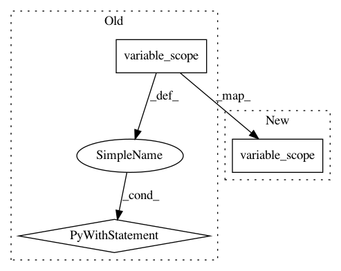

1a292afa66250814e3fa3fab26e4f7e5140baf31,contents/12_Proximal_Policy_Optimization/simply_PPO.py,PPO,__init__,#PPO#,36
Before Change
self.kl = tf.stop_gradient(tf.reduce_mean(kl_divergence(oldpi, pi)))
self.tflam = tf.placeholder(tf.float32, None, "lambda")
self.tfadv = tf.placeholder(tf.float32, [None, ], "advantage")
with tf.variable_scope("loss"):
self.aloss = -(tf.reduce_mean(ratio * self.tfadv) - self.tflam * self.kl)
with tf.variable_scope("atrain"):
self.atrain_op = tf.train.AdamOptimizer(A_LR).minimize(self.aloss)
tf.summary.FileWriter("log/", self.sess.graph)
After Change
surr = ratio * self.tfadv
if METHOD["name"] == "kl_pen":
self.tflam = tf.placeholder(tf.float32, None, "lambda")
with tf.variable_scope("loss"):
self.kl = tf.stop_gradient(tf.reduce_mean(kl_divergence(oldpi, pi)))
self.aloss = -(tf.reduce_mean(surr) - self.tflam * self.kl)
else: // clipping method
In pattern: SUPERPATTERN
Frequency: 3
Non-data size: 3
Instances
Project Name: MorvanZhou/Reinforcement-learning-with-tensorflow
Commit Name: 1a292afa66250814e3fa3fab26e4f7e5140baf31
Time: 2017-08-10
Author: morvanzhou@gmail.com
File Name: contents/12_Proximal_Policy_Optimization/simply_PPO.py
Class Name: PPO
Method Name: __init__
Project Name: MorvanZhou/Reinforcement-learning-with-tensorflow
Commit Name: 835ebfd174f6930ecce3a687bc6de852a4910f98
Time: 2017-08-13
Author: morvanzhou@gmail.com
File Name: contents/12_Proximal_Policy_Optimization/simply_PPO.py
Class Name: PPO
Method Name: __init__
Project Name: asyml/texar
Commit Name: ebec86aebcbe1a0044cb0991c964f95eae3f752c
Time: 2019-11-16
Author: pengzhi.gao@petuum.com
File Name: texar/tf/modules/decoders/dynamic_decode.py
Class Name:
Method Name: dynamic_decode